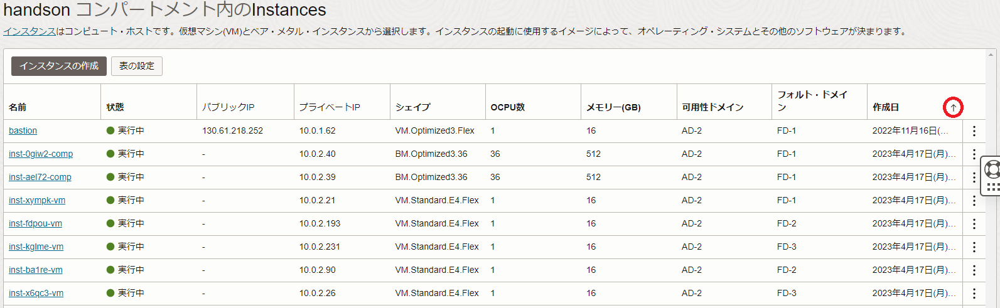
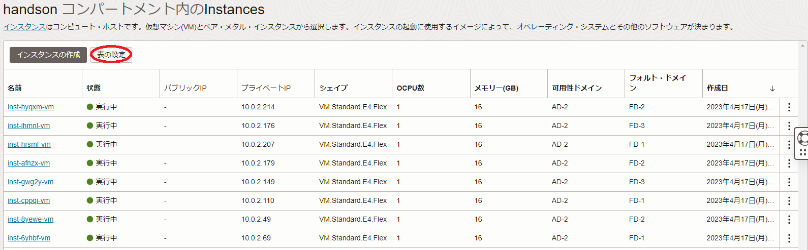
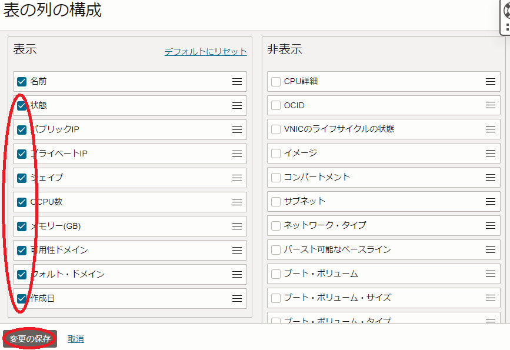
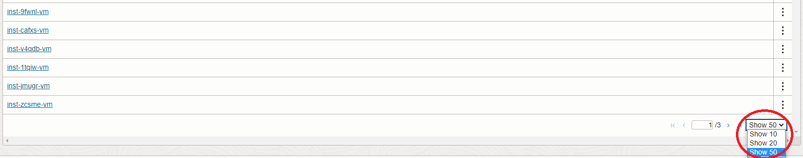
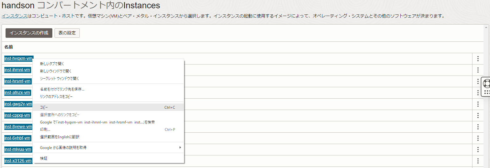
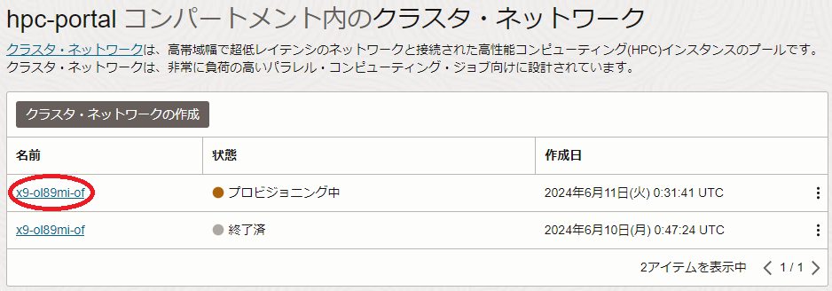
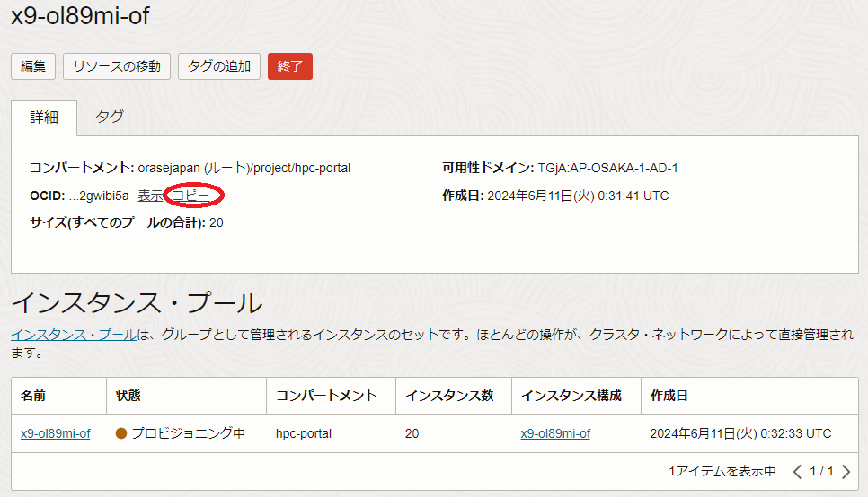

注意 : 本コンテンツ内の画面ショットは、現在のOCIコンソール画面と異なっている場合があります。
0. 概要
HPCクラスタやGPUクラスタを構築・運用する際、全ての計算/GPUノードに対して同じコマンドを実行する、ジョブスケジューラに全てのノードを一括登録する、といったオペレーションを行う場面が頻繁に発生します。
このようなオペレーションは、全ての計算/GPUノードのホスト名を1行に1ノード記載した、以下のようなホスト名リストをテキストファイルで予め作成しておくことで、効率よく実施することが可能になります。
inst-hyqxm-comp
inst-ihmnl-comp
inst-hrsmf-comp
inst-afnzx-comp
例えば、以下のようにこのホスト名リストを使用することで、全ての計算ノードのOSバージョンを確認することが可能です。
$ for hname in `cat ./hostlist.txt`; do echo $hname; ssh -oStrictHostKeyChecking=accept-new $hname "grep -i pretty /etc/os-release"; done
inst-0giw2-comp
PRETTY_NAME="Oracle Linux Server 8.6"
inst-ael72-comp
PRETTY_NAME="Oracle Linux Server 8.6"
$
このホスト名リストは、以下のような方法で効率的に作成することが可能です。
-
OCIコンソールを活用する方法
この方法は、OCIコンソールの インスタンス メニューに表示される計算/GPUノードのインスタンス名を活用する方法です。
この インスタンス メニューは、1ページに50インスタンスまでしか表示できないため、50ノードを超える場合は、複数ページにわたってコピー・ペーストを行う必要があり、後述の OCI CLI を使用する方法が効率的にホスト名リストを作成できます。 -
OCI CLI を活用する方法
この方法は、 OCI CLI の クラスタ・ネットワーク に含まれるインスタンスをリストする機能を活用し、コマンド一発でホスト名リストを作成する方法です。
OCI CLI は、これを利用可能にするための事前準備が必要なため、ノード数が少ないケースでは、前述の OCIコンソールを活用する方法 が手軽にホスト名リストを作成出来ます。
以上の観点を自身のHPC/GPUクラスタに照らし合わせ、どちらの手法を利用するかを決定します。
以降では、これら2つの方法を解説します。
なお、 HPCクラスタスタック を使用してクラスタを構築する場合は、ホスト名リストが /etc/opt/oci-hpc/hostfile.tcp として作成されるため、改めて作成する必要はありません。
また、 OCI HPCチュートリアル集 の HPCクラスタを構築する(基礎インフラ自動構築編) や GPUクラスタを構築する(基礎インフラ自動構築編) にしたがってクラスタを構築する場合も、ホスト名リストが /home/opc/hostlist.txt として作成されるため、改めて作成する必要はありません。
1. OCIコンソールを活用する方法
本章は、OCIコンソールを活用してホスト名リストを作成します。
-
OCIコンソールにログインし、HPC/GPUノードをデプロイした リージョン を選択後、 コンピュート → インスタンス とメニューを辿ります。
-
OCIコンソールの インスタンス メニューは、デフォルトで 作成日 列の古い順にインスタンスをリストします。
そこで、作成した計算/GPUノードのインスタンスを上位に表示するため、以下画面の上向き矢印をクリックし、新しい順にインスタンスを並べ替えます。
-
以下画面の 表の設定 ボタンをクリックし、

表示される以下 表の列の構成 サイドバーの 表示 フィールドで、 名前 以外のチェックボックスを全てクリックしてこれらを非表示に設定し、 変更の保存 ボタンをクリックします。

-
表示される以下画面右下で、1ページに表示するインスタンス数を選択できる最大（最大でも50インスタンス）の値に設定します。

-
表示される以下画面で、対象のインスタンスを選択し、これらのホスト名をクリップボードにコピーします。

-
ホスト名リストを使用するインスタンスでエディターを起動し、クリップボードの内容を張り付けてホスト名リストを作成します。
この時点のホスト名リストは、以下のようにホスト間に空行が含まれています。inst-hyqxm-comp inst-ihmnl-comp inst-hrsmf-comp inst-afnzx-compそこで、以下のコマンドでこの空行を除去します。
$ grep -v "^$" hostlist_tmp.txt > hostlist.txt $ cat hostlist.txt inst-hyqxm-comp inst-ihmnl-comp inst-hrsmf-comp inst-afnzx-comp $
2. OCI CLIを活用する方法
本章は、 OCI CLI を活用してホスト名リストを作成します。
OCI CLI は、事前にインストール・セットアップする必要があります。
作成するホスト名リストは、通常HPC/GPUクラスタを管理する役割を担う管理ノードで使用するため、 OCI CLI のインストール・セットアップも、この管理ノードで行います。
-
以下のOCI公式マニュアルに従い、管理ノードに OCI CLI をインストール・セットアップします。
https://docs.oracle.com/ja-jp/iaas/Content/API/SDKDocs/cliinstall.htm
-
OCIコンソールにログインし、HPC/GPUノードをデプロイした リージョン を選択後、 コンピュート → クラスタ・ネットワーク とメニューを辿ります。
-
表示される以下画面で、HPC/GPUノードをデプロイする際に作成した クラスタ・ネットワーク をクリックします。

-
表示される以下画面で、 OCID フィールドの コピー ボタンをクリックし、 クラスタ・ネットワーク のOCIDをクリップボードにコピーします。

-
以下コマンドを管理ノードの OCI CLI をセットアップしたユーザで実行し、ホスト名リストを作成します。
この際、 cn_ocid は先にクリップボードにコピーした クラスタ・ネットワーク のOCIDを、 comp_ocid は クラスタ・ネットワーク をデプロイした コンパートメント のOCIDに置き換えます。$ oci compute-management cluster-network list-instances --all --cluster-network-id cn_ocid -c comp_ocid | jq -r '.data[]."display-name"' > hostlist.txt $ cat hostlist.txt inst-hyqxm-comp inst-ihmnl-comp inst-hrsmf-comp inst-afnzx-comp $